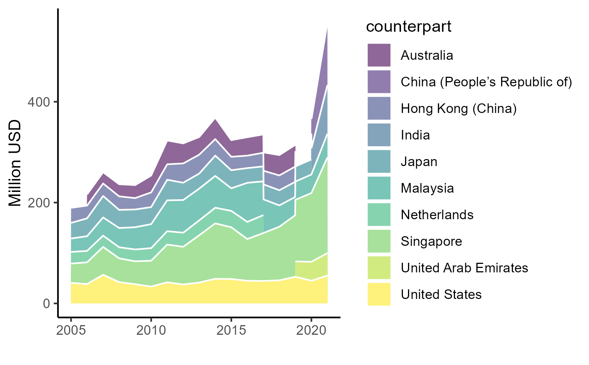

| Export 1 | Export 2 | GDP 1 | GDP 2 | |
|---|---|---|---|---|
| + p < 0.1, * p < 0.05, ** p < 0.01, *** p < 0.001 | ||||
| (Intercept) | 0.704 | 1.354+ | 0.112 | 0.243+ |
| (0.724) | (0.692) | (0.127) | (0.128) | |
| L(exM, 1) | 0.676** | 1.135*** | ||
| (0.222) | (0.177) | |||
| imM | 0.273 | 0.307* | -0.003 | -0.023 |
| (0.184) | (0.127) | (0.020) | (0.022) | |
| imSev | -0.106 | -0.130 | 0.098** | 0.110*** |
| (0.247) | (0.146) | (0.029) | (0.024) | |
| L(imM, 1) | -0.151 | 0.031 | ||
| (0.166) | (0.023) | |||
| L(imSev, 1) | -0.485* | -0.083* | ||
| (0.182) | (0.030) | |||
| L(pdb, 1) | 0.917*** | 0.938*** | ||
| (0.024) | (0.022) | |||
| Num.Obs. | 18 | 18 | 18 | 18 |
| R2 | 0.881 | 0.967 | 0.997 | 0.998 |
| Log.Lik. | 32.291 | 43.772 | 70.818 | 76.085 |
| RMSE | 0.04 | 0.02 | 0.00 | 0.00 |
Servicification, manufacturing
and the Indonesian third unbundling
April 22, 2025
Indonesian services

Indonesia has always been a net importer of trade. Export services is dominated by tourism, while import services is dominated by logistics and business services.
Indonesian government often concerned with deficit trade, but trade in services has often neglected in the discussion.
Trade by partner,2021


Singapore is the most important partner in trade in services for Indonesia. China, on the other hand, is the main buyer of Indonesia’s services export
Trade by sector, 2021


Indonesia’s imports dominates exports in all categories bar travel (SD). Additionally, the highest traded services in Indonesia are transport (SC) and business services (SJ)
Top services: travel


The only net export got punished by the pandemic. China+Australia important export destination,
Top services: transport

Singapore’s dominance is apparent here. Very important for manufactures trade.
Top services: ICT services


Perhaps the most relevant services to leap-frogging and feedback. Also the highest beneficiary of the pandemic.
Top services: biz services
Other business services includes consulting management, research and development, and trade-related services (Liberatore et al. 2021)